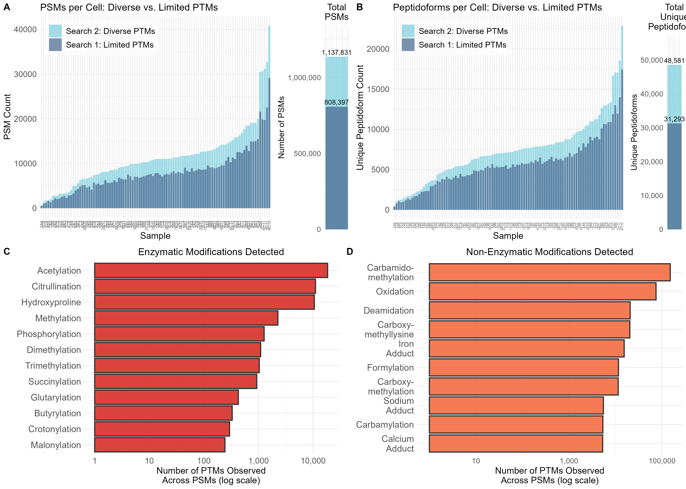
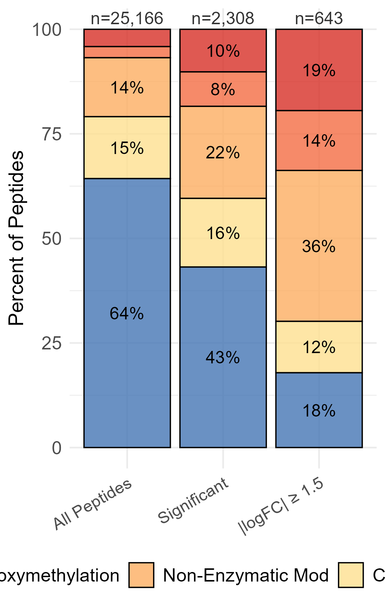
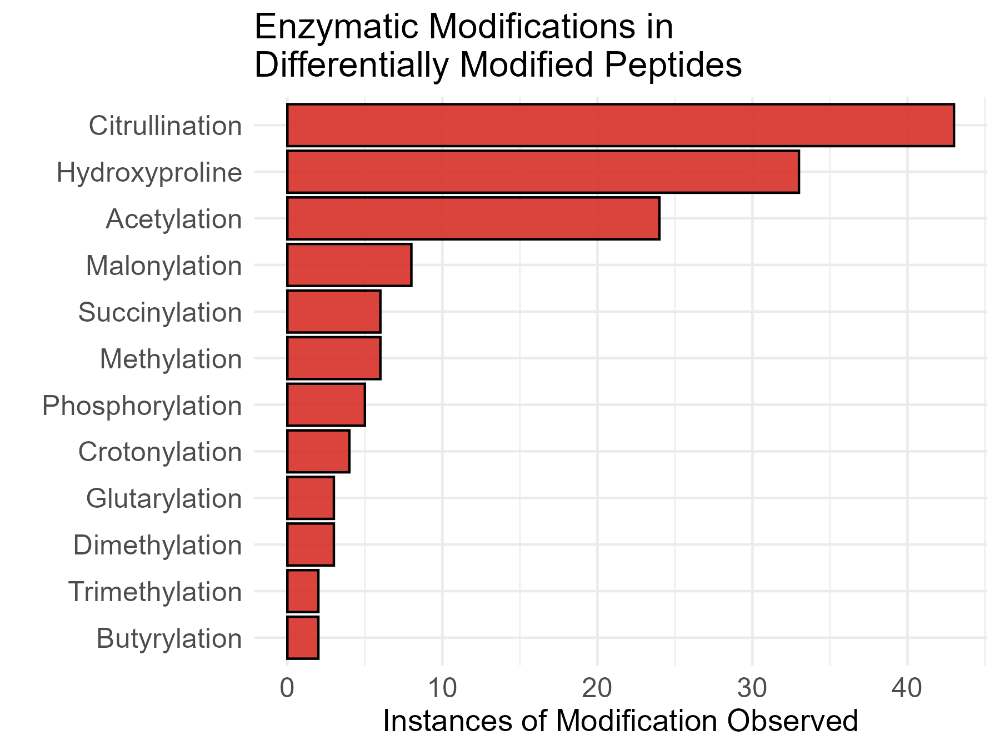
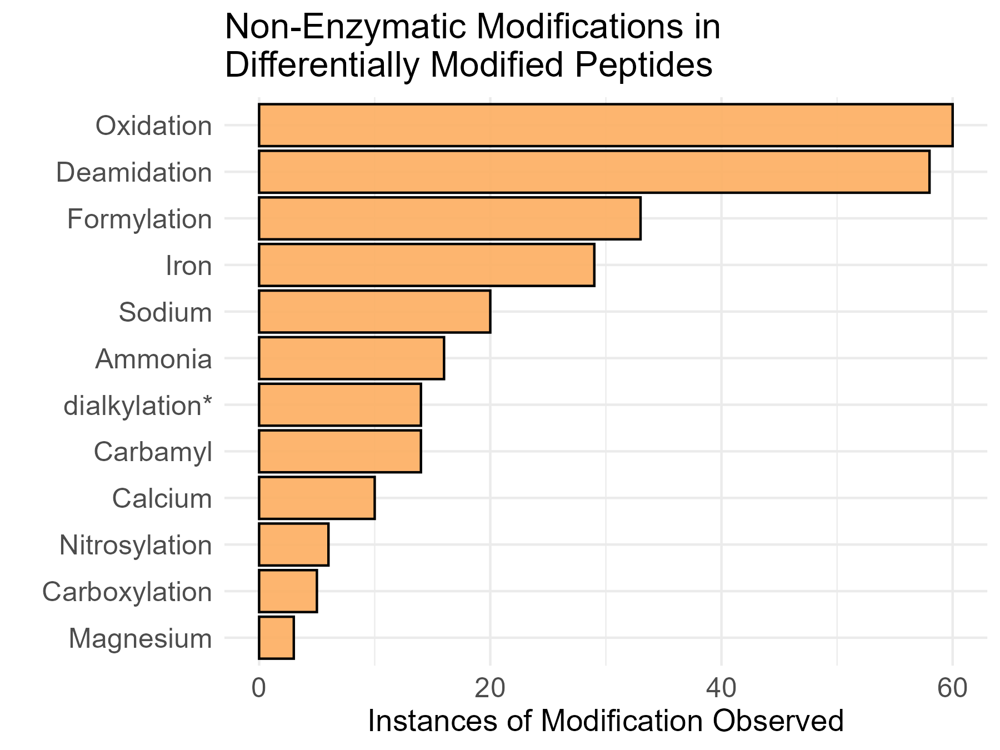
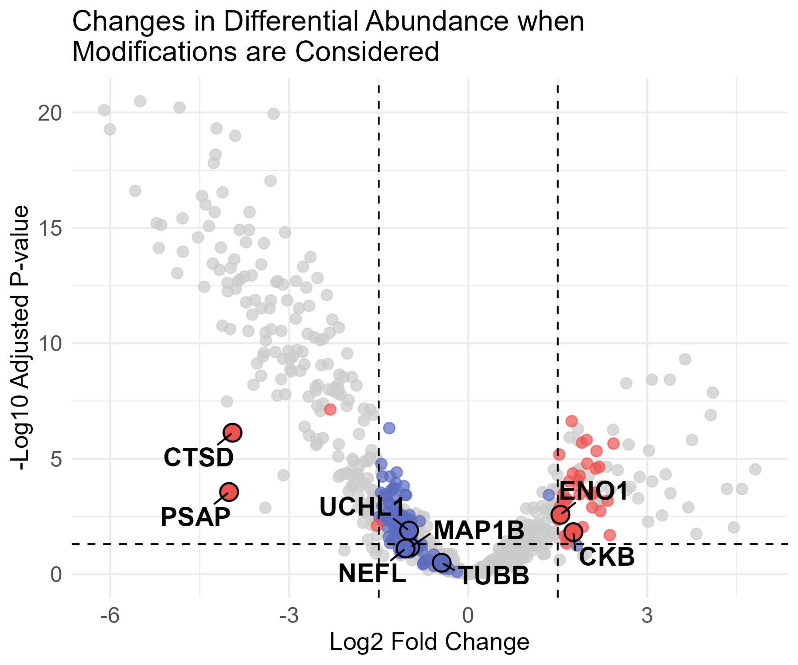
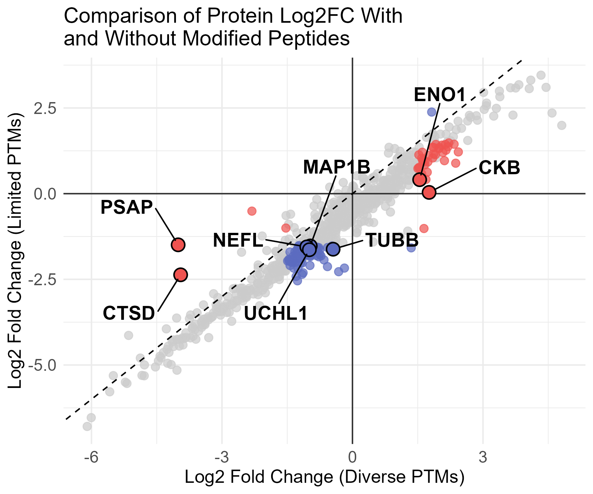
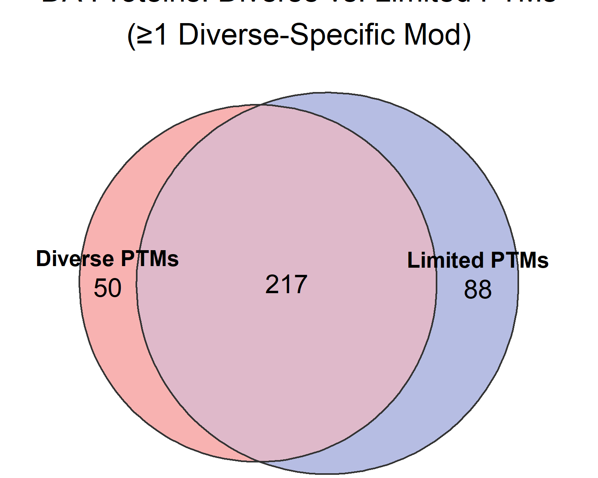

4 · Downstream Analysis in R
This page walks through the R analysis that turns the quantification tables into the manuscript’s results and figures. The full scripts are:
MainManuscript/CustomScripts.R— data loading, cleaning, PTM parsing, and metadata helpers.MainManuscript/analysis.R— all differential-abundance and PTM analyses (run this first).MainManuscript/plotting.R— all publication figures (run afteranalysis.R).Supplemental/analysis.R+Supplemental/plotting.R— supplementary analyses and figures.
Set the working directory to the repository root before running (opening Quantification_of_PTMs.Rproj in RStudio does this). All paths are relative to that root. The code below is shown for reference and is not executed when this site builds; the figures are the actual manuscript outputs.
Setup
library(tidyverse)
library(limpa)
library(limma)
source("MainManuscript/CustomScripts.R")
# Thresholds used throughout
PROP_OBS_MIN_ANALYSIS <- 0.02 # peptide observability filter applied before model fitting
PROP_OBS_MIN_RESULTS <- 0.12 # stricter filter for reported results (~observed in >= 10 cells)
logFC_cutoff <- 1.5
pval_cutoff <- 0.05The two FlashLFQ searches are loaded the same way; the diverse-PTM EList (y.peptide, y.protein, y.peptide.imputed) and the limited-PTM EList (y.peptide.lim, y.protein.lim) are built as shown on the limpa page and cached to Data/.
Quality control
Before any filtering, per-sample log2 intensity distributions are checked for systematic shifts between ALS and control cells, at both the peptide and protein level.
pep_long <- as.data.frame(y.peptide$E) %>%
rownames_to_column("PeptideSequence") %>%
pivot_longer(-PeptideSequence, names_to = "Sample", values_to = "Log2Int") %>%
filter(!is.na(Log2Int)) %>%
left_join(y.peptide$targets[, c("Sample", "Group")], by = "Sample")
ggplot(pep_long, aes(x = Log2Int, color = Group)) +
geom_density() +
scale_color_manual(values = c("ALS" = "#d73027", "CTRL" = "#4575b4"))
Figure 1 — PTM discovery: diverse vs limited searches
Figure 1 quantifies how much more is discovered by the diverse search. PSMs and peptidoforms are filtered to a 1% peptide-level FDR, counted per cell for each search strategy, and the diverse search’s modifications are broken down into enzymatic vs non-enzymatic classes.
filter_mm_results <- function(df, q_threshold = 1, pep_q_threshold = 0.01) {
df %>% filter(PEP_QValue <= pep_q_threshold,
QValue <= q_threshold,
!grepl("C|D", Decoy.Contaminant.Target))
}
diverse_psm <- read.csv(PATH_DIVERSE_PSM, sep = "\t") %>% filter_mm_results()
limited_psm <- read.csv(PATH_LIMITED_PSM, sep = "\t") %>% filter_mm_results()
# Per-cell counts, then a modification-type breakdown of the diverse search
mod_list <- GetModsTextWReplacement(diverse_psm$Full.Sequence, all_mods = TRUE)This panel reads the raw AllPSMs.psmtsv / AllPeptides.psmtsv files, which are not redistributed (they live on the lab network and are git-ignored). Copy your MetaMorpheus outputs into Data/DiversePtms/ and Data/LimitedPtms/ to regenerate it.

Figure 2 — Peptidoform composition and the occupancy model
Every peptidoform is classified — unmodified, enzymatic, carboxymethylation, carbamidomethylation, or other non-enzymatic — using ClassifyPeptideModsSpecific(). Figure 2 shows how that composition shifts as the peptide set is restricted to significant and high-fold-change differential peptidoforms.
The differential test itself works on PTM occupancy: each modified peptide is normalized to its parent protein (propagating standard error), low-coverage peptides are filtered out, and dpcDE() / eBayes() test for an ALS-vs-control difference, blocking on donor.
design <- model.matrix(formula(~0 + Group), data = targets)
colnames(design) <- gsub("Group", "", colnames(design))
# Normalize each modified peptide to its parent protein (SE-propagating)
all.mod.normed.pro <- GetNormalizedEList(
y.peptide.imputed$genes$PeptideSequence, y.peptide.imputed,
y.protein = y.protein, normalize_to_protein = TRUE
)
all.mod.normed.pro <- all.mod.normed.pro[all.mod.normed.pro$genes$PropObs >= PROP_OBS_MIN_ANALYSIS, ]
fit_occ <- dpcDE(all.mod.normed.pro, block = targets$Donor, design = design, plot = FALSE)
fit_occ2 <- contrasts.fit(fit_occ, makeContrasts(ALS_vs_CTRL = "ALS - CTRL", levels = design))
eb_fit_occ <- eBayes(fit_occ2)
table_occ <- topTable(eb_fit_occ, coef = "ALS_vs_CTRL", number = Inf)
table_occ$Category <- ClassifyPeptideModsSpecific(
GetModsTextWReplacement(table_occ$PeptideSequence, all_mods = TRUE) %>% sapply(paste)
)
Figure 3 — Differentially modified peptidoforms
Peptidoforms passing the occupancy test (adj.P.Val <= 0.05, |logFC| >= 1.5) are visualized in a volcano plot colored by modification class, with neurofilaments, GFAP, and elongation factors highlighted. The modifications driving these differential peptidoforms are then tallied.
de_splice <- base_filtered %>%
filter(adj.P.Val <= pval_cutoff, abs(logFC) >= logFC_cutoff, PropObs > PROP_OBS_MIN_RESULTS) %>%
arrange(desc(abs(logFC)))


Figure 4 — Protein-level differential abundance: diverse vs limited
Finally, protein-level differential abundance is run for both searches (proteins with ≥ 2 peptides; dpcDE() + eBayes(), blocked on donor) and the two result tables are merged. Genes are labeled by whether their DA call is shared, diverse-only (ModDA), or limited-only (NoModDA), and each gene’s modified-peptide count is attached. This is where including modified peptidoforms visibly changes which proteins are called differentially abundant.
y.protein.filt <- y.protein[y.protein$genes$NPeptides >= 2, ]
fit_pro <- dpcDE(y.protein.filt, design = design, block = targets$Donor,
plot = FALSE, sample.weights = TRUE)
fit_pro2 <- contrasts.fit(fit_pro, makeContrasts(ALS_vs_CTRL = "ALS - CTRL", levels = design))
table_protein_diverse <- topTable(eBayes(fit_pro2), coef = "ALS_vs_CTRL", number = Inf)
# ... the same for the limited search (table_protein_limited) ...
merged_pro <- merge(table_protein_diverse,
table_protein_limited[, c("Gene", "logFC", "adj.P.Val")],
by = "Gene", suffixes = c("", "_NoMod")) %>%
mutate(LogFC_Diff = logFC - logFC_NoMod,
ModDiff = case_when(
Gene %in% setdiff(limited_de_genes, diverse_de_genes) ~ "NoModDA",
Gene %in% setdiff(diverse_de_genes, limited_de_genes) ~ "ModDA",
TRUE ~ "Shared"))


Outputs
analysis.R writes the key result tables to Data/:
DE_proteins.tsv— differentially abundant proteins (diverse search).ModDiscordant_proteins.tsv— proteins whose DA call differs between searches.ModDiscordant_withCat_breakdown.tsv— the same, with per-category modified-peptide counts.
plotting.R writes every figure to MainManuscript/Figures/. To regenerate everything from the cached quantification tables:
source("MainManuscript/analysis.R") # builds all analysis objects (uses Data/ cache if present)
source("MainManuscript/plotting.R") # writes figures to MainManuscript/Figures/